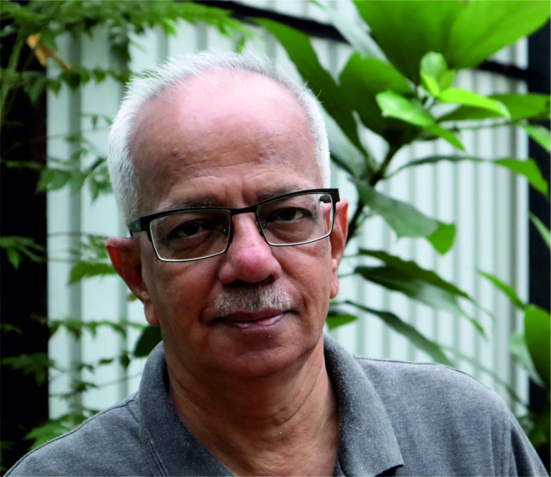
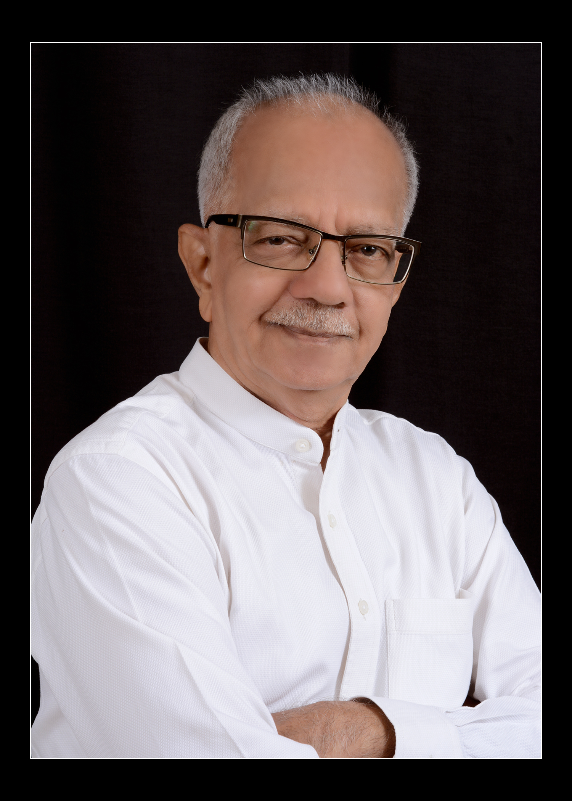

52+ years of Ayurvedic practice and leadership
Presented as the main credibility anchor across the site.
A 52+ year career spanning patient care, Ayurvedic research standardization, business and industry management, and academic-policy contribution. The work is broad, but the center is consistent: Ayurveda practiced with depth, evidence, and responsibility.

The site is now structured around the four ways people understand Dr. Bhatt's contribution: doctor and clinician, researcher, business and industry manager, and academic-policy contributor.

Doctor, clinician, and long-practicing Ayurvedic thinker focused on diagnosis, patient context, and practical care.

Creator of structured research and validation frameworks such as MATRIX Mode, EVA, and MANTHAN.

Leadership in natural healthcare, including the Zandu Pharmaceuticals period and research-led product credibility.

Teaching, institutional dialogue, public-health thinking, and participation in wider Ayurveda policy conversations.
The revised site restores scale by showing the breadth of the work, without making the page feel cluttered or repetitive.
Presented as the main credibility anchor across the site.
A concrete signal of research-led business and product validation.
A research milestone that connects Ayurveda with neurological care exploration.
Named frameworks that show method, not just reputation.
Each area has its own page, imagery, and emphasis. Together they show a fuller portrait of a physician whose work moved beyond the clinic into research systems, industry scale, and public institutions.